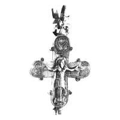
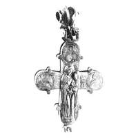

Catalog › CE-0977 · KOR2003-III.1.1.3
Encolpion întreg cu inel din două jumătăți, relief finisat cu dalta, email roșu, Odighitria pe revers
sec. hotar XI–XII (1001–1200) · Veliki Novgorod, Rusia · Muzeul-rezervație Unit de Stat din Novgorod (NGOMZ), Veliki Novgorod, inv. КП 25293/А5 153
double-sided reliquary cross (enkolpion); c. hotar XI–XII (1001–1200); found at Veliki Novgorod, Rusia; kept at Muzeul-rezervație Unit de Stat din Novgorod (NGOMZ), Veliki Novgorod.




Identificare
- Categorie
- Encolpion bivalv (relicvar)
- Tehnică
- Gravare (incizie); Email
- Stare
- Întreagă
- Dimensiuni
- Î 88 × L 73 mm
Iconografie
- Descriere avers
- Encolpion întreg cu inel de agățare alcătuit din două jumătăți. Marginile ambelor valve și medalioanele sunt marcate cu crestături oblice. Imaginile centrale în relief sunt prelucrate cu dalta; semifigurile de pe capetele laterale ale brațelor și din medalioanele de sus sunt executate cu dalta în combinație cu email roșu, care umple liniile largi de contur ale nimburilor, veșmintelor, medalioanelor; lemnul crucii și nimbul Maicii Domnului sunt evidențiate prin prelucrare.
- Revers
- Maica Domnului cu Pruncul
- Descriere revers
- Pe revers, în centru, Maica Domnului Odighitria; pe laturi medalioane cu sfinți.
- Inscripții
- ГѲРЬ/ГН; СХС; МНР ΘҮ; НОАНЪ (în oglindă); ЛА НН; МР/ΘҮ/ПА/ВЪ/ЛЪ; СХС/П/РТЪ; ГЕОРДГН; НИКОЛА; ЛОУКА; ЛАЗАРЪЛАЖЬ; ИВАНОВО
- Limba
- Slavonă
Datare și atribuire
- Datare
- sec. hotar XI–XII (1001–1200)
- Centru
- Necunoscut
- Tipologie
- Korzukhina–Peskova 2003, tip III 1 1
Descoperire
- Localitate
- Veliki Novgorod
- Țară
- Rusia
- Context
- Așezare
- Anul
- 1955
Păstrare și referințe
- Colecție
- Muzeul-rezervație Unit de Stat din Novgorod (NGOMZ), Veliki Novgorod
- Nr. inventar
- КП 25293/А5 153
- Bibliografie
- G. F. Korzukhina, A. A. Peskova, Древнерусские энколпионы. Нагрудные кресты-реликварии XI–XIII вв., Sankt-Petersburg, 2003 [Korzukhina–Peskova 2003], p. 102, cat. nr. III 1 1/3, reprodusă la Табл. 55 (planșe, p. 297). Bibliografie citată în sursă: Седова 1981, 55, 57, рис. 18, 3, 4; Колчин, Янин, Ящиков 1985, 55, № 66а.
- Figura
- Табл. 55
- Planșe
- Korzukhina–Peskova 2003, Табл. 55 (planșă fără paginație proprie în PDF; p. 297 tipărită)
- Observații
- Datare după Peskova: sec. hotar XI–XII. Circumstanțe: Săpături 1955, săpătura Nerevski, nivel 21/20, strat 22, careul 997. Inscripții adâncite pe valva de față: sus ГѲРЬ/ГН, СХС, MNР ΘҮ la stânga, НОАНЪ la dreapta (în oglindă); pe revers: ЛА НН sus, МР/ΘҮ/ПА/ВЪ/ЛЪ la stânga, СХС/П/РТЪ la dreapta. Pe fața interioară a crucii, pe ambele jumătăți, sunt zgâriate nume greu lizibile ale sfinților (ГЕОРГН, НИКОЛА, ЛОУКА, ЛАЗАРЪЛАЖЬ, ИВАНОВО, în oglindă). Materialul nu este indicat în sursă; lectura inscripțiilor și a numelor autorilor din referința 1985 de verificat pe pagina PDF 103. Coordonate: nu sunt date în sursă.
Citare: Corpus Encolpiorum, CE-0977, Encolpion întreg cu inel din două jumătăți, relief finisat cu dalta, email roșu, Odighitria pe revers, --root/piese/KOR2003-III.1.1.3/ (accesat 2026-10-17).